Концепция цифровизации контрольно-надзорной деятельности до 2030 года
Материалы для совещания у Министра труда и социальной защиты Российской Федерации
Единая система обеспечения КНД
АСУ КНД • Онлайн-инспекция • АИС УБР
Единая система обеспечения КНД Роструда
Единый контур обеспечения контрольно-надзорной деятельности
Основание: Распоряжение Правительства РФ №1028-р от 05.06.2015 — Концепция повышения эффективности обеспечения соблюдения трудового законодательства
Информационные системы обеспечения КНД
Архитектура единой системы обеспечения КНД
Интерактивная схема всех компонентов платформы. Наведите на систему для подсветки связей. Двойной клик — пауза анимации
АСУ КНД — ядро контрольно-надзорной деятельности
Бэк-офис надзора
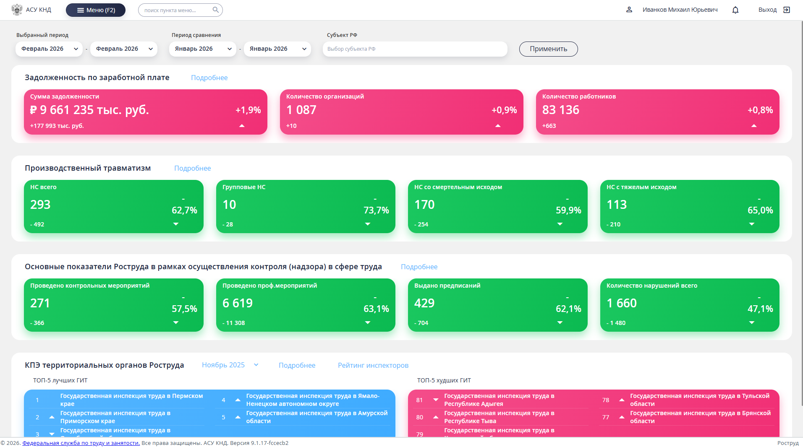
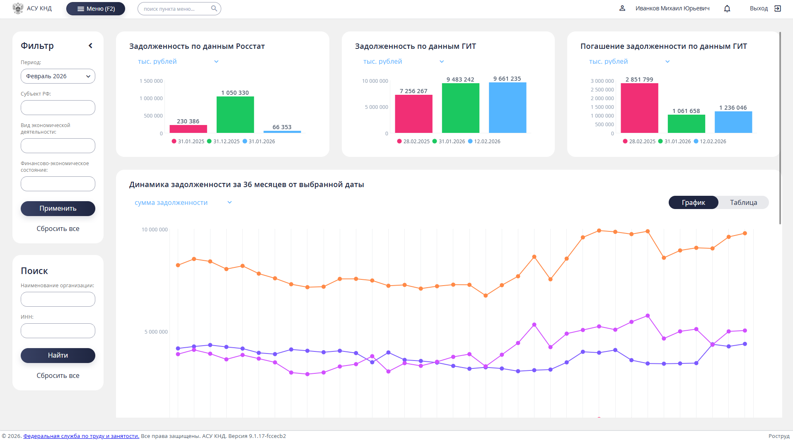
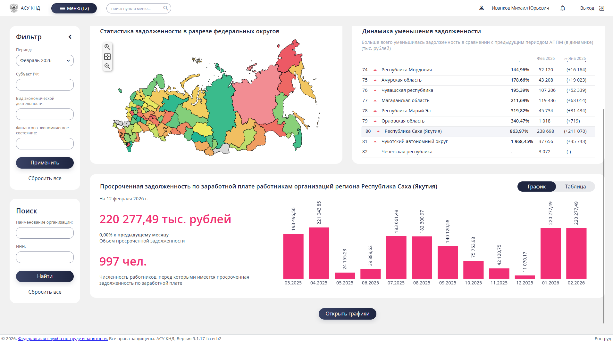
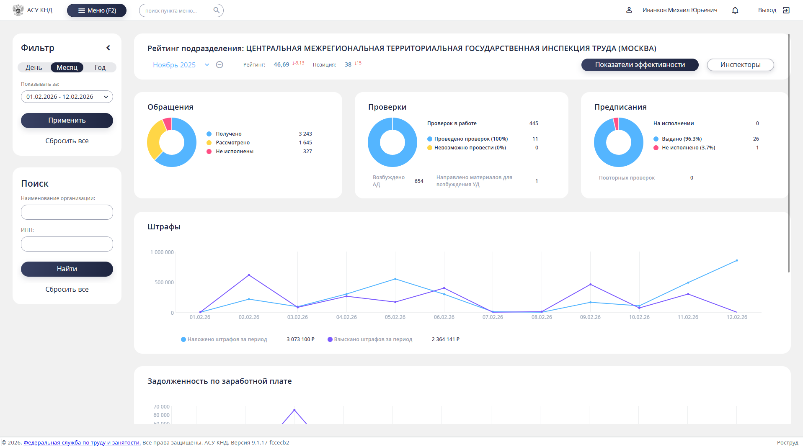
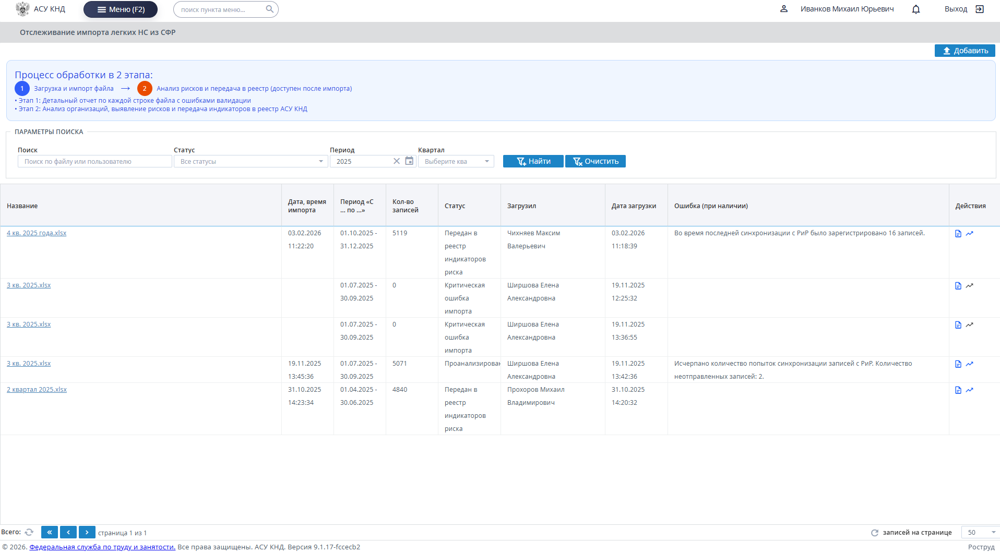
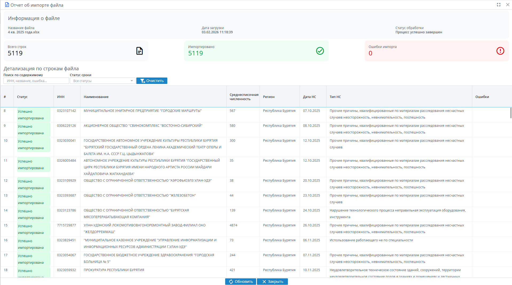
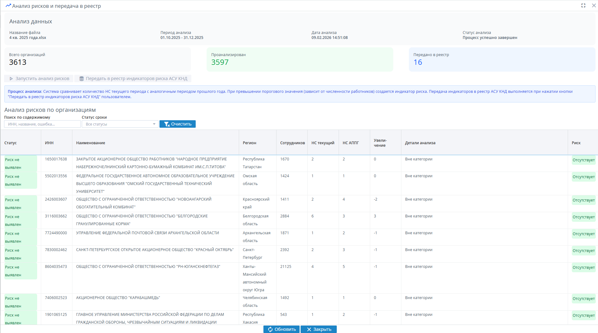
Автоматизированная система управления контрольно-надзорной деятельностью: обеспечивает работу2 574 сотрудника (ЦА — 222, в ГИТ — 2 352) 63 территориальных ГИТ + Крым и Севастополь — от планирования мероприятий до оценки результатов.
Основание:Распоряжение Правительства РФ №1028-р от 05.06.2015 — Концепция повышения эффективности обеспечения соблюдения трудового законодательства.
3 вида федерального контроля: трудовое законодательство, аккредитация ЧАЗ, социальное обслуживание. 56 подсистем ·>100 модулей · 2 829 пользователей.
Информирование и консультирование по трудовому законодательству
Подача декларации соответствия условий труда
Подача жалобы на работодателя при сокращении
Сервис приема уведомлений о предпринимательской деятельности
📊 ФНС РОССИИ (9)
Выписки из ЕГРИП / ЕГРЮЛ
Открытые сведения из ЕГРИП / ЕГРЮЛ
Закрытые сведения из ЕГРИП / ЕГРЮЛ
Сведения о задолженности (ЕНС)
Сведения о среднесписочной численности работников
Список ЮЛ/ИП с новыми сведениями в ЕГРЮЛ/ЕГРИП
⚖️ ГЕНЕРАЛЬНАЯ ПРОКУРАТУРА (2)
Размещение сведений в ЕРКНМ
Размещение сведений в ЕРП
👥 СФР — СОЦИАЛЬНЫЙ ФОНД (2)
Передача сведений о выявленных правонарушениях
Сведения о состоянии расчетов по страховым взносам
📋 ФССП РОССИИ (1)
Исполнительные документы и постановления
🛂 МВД РОССИИ (2)
Проверка действительности паспорта
Сведения о судимости / уголовном преследовании / розыске
💻 МИНЦИФРЫ / ТОР КНД / ЕРВК (16)
Внесение/получение информации из реестра объектов контроля ЕРВК
Запрос списка КНО и их видов контроля
Предоставление сведений о виде контроля / КНО из ЕРВК
Размещение дел об АП в ГИС ТОР КНД
Взаимодействие с ТОР КНД (ДО / ДО ЛР)
Проведение КНМ/ПМ/ОС в МП «Инспектор»
Сведения об актах и требованиях ФГИС РОТ
Запрос карточки / номера лицензии (ЕРУЛ)
Запрос списка лицензирующих органов
Направление информации о лицензиях (ЕРУЛ)
Предоставление сведений об отказах (ЕРУЛ)
🌐 МИНЦИФРЫ / ЕПГУ / ПОС (4)
Взаимодействие с расчётными банками (платежи)
Передача категорий риска на ЕПГУ
Передача статусов и результатов госуслуг (ЕЛК)
Информация по сообщениям в ПОС
🏦 КАЗНАЧЕЙСТВО — ГАС «Управление» (4)
Запрос данных / изменений показателей
Предоставление данных и метаданных
Предоставление метаданных КНД
📚 ДРУГИЕ (3)
Бухгалтерская отчетность организаций (РОССТАТ)
Данные годовой бух. отчетности (РОССТАТ)
Сведения из ФРДО (РОСОБРНАДЗОР)
ОИ.рф — клиентский портал КНД
Фронт-офис надзора
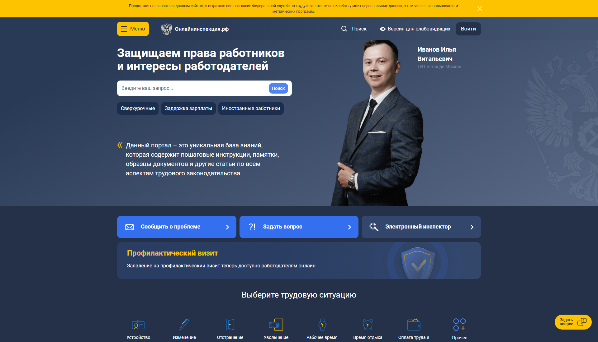
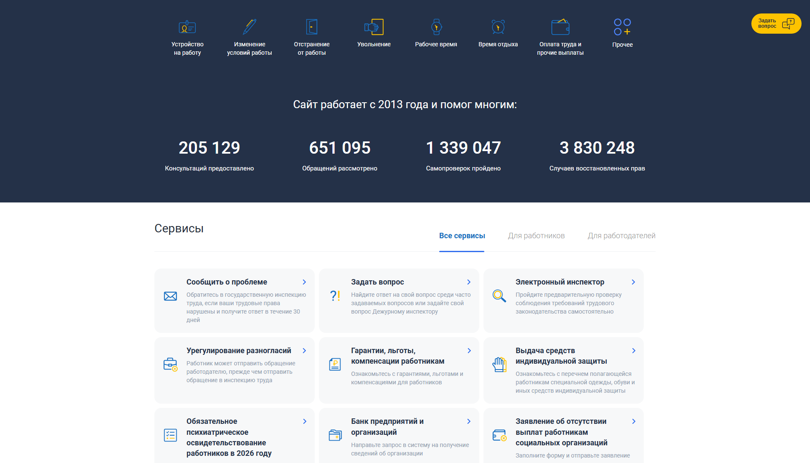
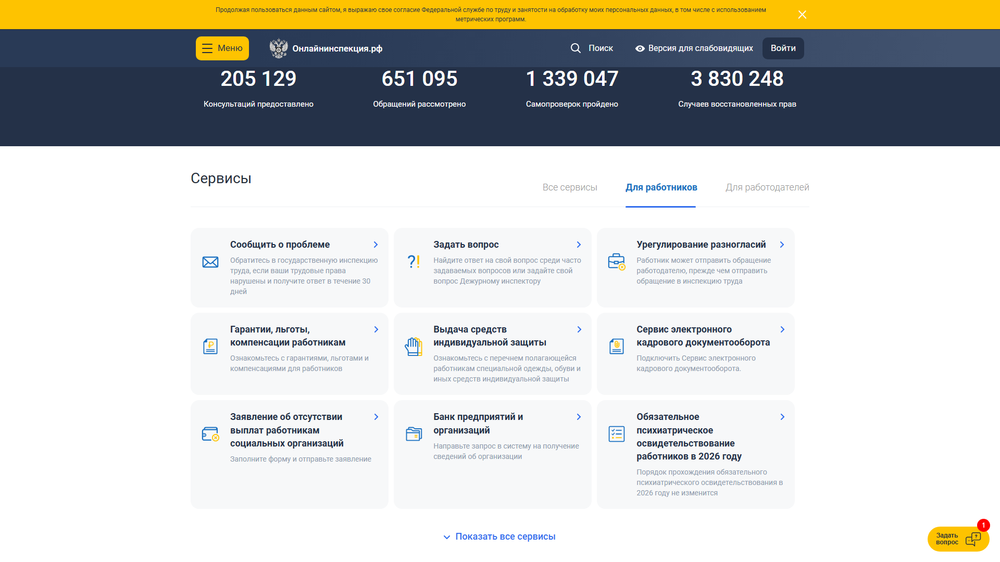
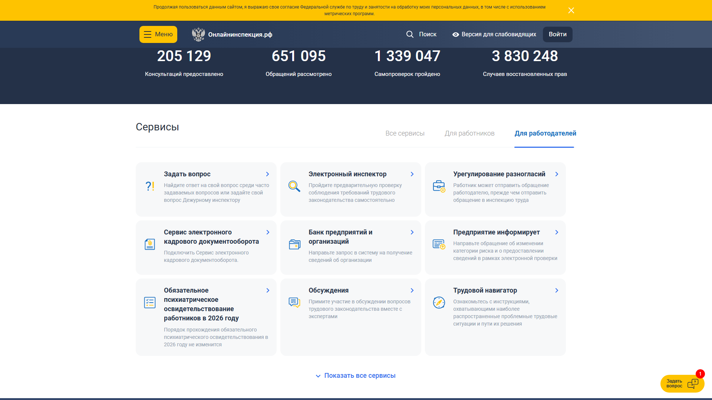
Система интерактивных сервисов для работников и работодателей. Позволяет получать информацию о требованиях трудового законодательства, обращаться за разъяснениями и использовать инструменты для устранения нарушений и защиты трудовых прав.
Основание:Распоряжение Правительства РФ №1028-р от 05.06.2015 — Концепция повышения эффективности обеспечения соблюдения трудового законодательства.
Онлайн-инспекция — сервисы для работников и работодателей · Владелец: Роструд
АИС УБР — управление хозяйственной деятельностью
Финансовый бэк-офис
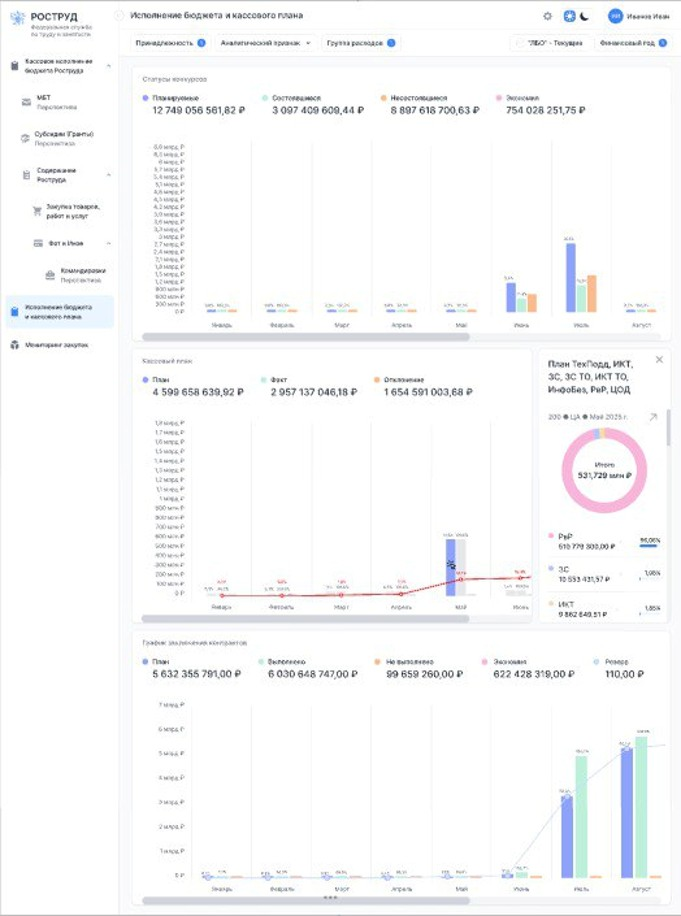
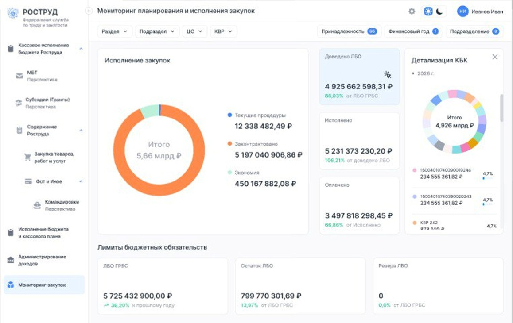
Ведомственная информационная система управления всей финансово-хозяйственной деятельностью Роструда и 65 территориальных органов (ГИТ). Создана в 2015 году. Модернизирована в 2019 году после передачи бюджетного учёта в Федеральное казначейство.
Это не только штрафы: планирование и исполнение бюджета, межбюджетные трансферты, администрирование доходов, учёт имущества, мониторинг закупок, сводная отчётность, контроль задолженности по зарплате при нацпроектах.
Импортозамещение: Альт СП Сервер 8, PostgreSQL, Java, Docker · 16 видов сведений СМЭВ 3.0 (ГИС ГМП)
9 подсистем АИС УБР ▼
Планирование и исполнение бюджета
Учёт ЛБО, расходные расписания, контроль освоения, интеграция с ГИИС ЭБ.
1. Реинжиниринг процессов контрольно-надзорной деятельности
248-ФЗ · 3745-р · 540-ФЗ
Нормативные предпосылки
2015
Концепция 1028-р
Создана АСУ КНД и ОИ.рф. Заложена архитектура 65 процессов надзора за трудовым законодательством. Модель «открытой инспекции труда».
2020
248-ФЗ — реформа КНД
Фундаментальная смена модели: риск-ориентированный подход, индикаторы риска, новые виды КНМ и ПМ, жизненный цикл мероприятий. Требования к ЕРКНМ, ЕРВК, ТОР КНД.
2023
Концепция 3745-р
Автоматизация индикаторов риска, «калькуляторы рисков», цифровой профиль работодателя. Плановый контроль — только высокий и чрезвычайный риск.
2024
540-ФЗ — МП «Инспектор»
Проведение КНМ с мобильного устройства. Госключ, дистанционный контроль, фиксация результатов на месте.
Разрыв: в АСУ КНД реализованы требования 248-ФЗ — 65 процессов по 3 видам контроля, цифровые документы, жизненный цикл КНМ. Однако п. 2.1.1 (виды сведений ЕРКНМ), Концепция 3745-р (динамические категории рисков, автоиндикаторы) и 540-ФЗ (МП «Инспектор») требуют глубокой модернизации процессов КМ и ПМ — интеграции ЕРВК и ФГИС РОТ в процессы, перестройки досудебного обжалования, автоматизации контроля сроков. Два направления модернизации закроют этот разрыв.
Экосистема: АСУ КНД в федеральной инфраструктуре контроля
Детализация: матрица интеграций АСУ КНД
Система
ВС СМЭВ
Статус АСУ КНД
Целевое состояние
Бизнес-эффект
ТОР КНД — ДО КНД
п. 21.1
Реализовано
Досудебное обжалование КНД и разрешительной деятельности
Уже работает
ТОР КНД — АП
п. 22.1
Реализовано
Рассмотрение АД в АСУ КНД; выгрузка статусов и результатов в РАД (реестр дел об АП)
Уже работает
ЕРВК — справочники
п. 1.3
Интегрирован
Переход на v.1.3.*: атрибуты индикаторов риска, адм. ответственности, авто-подписание паспортов
Актуальные справочники видов контроля
ЕРВК — объекты
п. 2.1 / 3.1
Интегрирован
Двусторонний обмен категорированными объектами + привязка к терорганам
Единый реестр объектов контроля
ФГИС РОТ
п. 7.3 / 7.4
Через API, нужен СМЭВ
Переход на СМЭВ 3 / витрину СМЭВ 4. Авто-обновление обязательных требований в проверочных листах
Корректность проверок
ЕРКНМ (Генпрокуратура)
п. 6.1
2П 2026 + ВС 7.2.1
Авто-размещение КНМ по индикаторам, авто-подписание паспортов проверок от имени ИС, контроль качества пакета в Генпрокуратуру
Снятие ручных операций с инспекторов
МП "Инспектор" (540-ФЗ)
п. 23.1
Завершается
Полный цикл КНМ/ПМ/ОС через мобильное приложение
Дистанционный контроль
ТОР КНД — ДО профилактика
п. 21.2
Не реализовано
ДО по профилактическим мероприятиям
Планируется
Из анализа экосистемы вытекают 2 направления модернизации:
НАПРАВЛЕНИЕ 1: Сквозной цифровой контур КНД
Направление 1
Сквозной цифровой контур КНД
АСУ КНД уже работает в масштабе 63 ГИТ + Крым и Севастополь. Цель: убрать ручные разрывы и довести процесс до сквозного нормативно-корректного контура.
Процессы КМ/ПМ перестроены под виды сведений ЕРКНМ; ЕРВК и ФГИС РОТ интегрированы в процессы.
Досудебное обжалование изменяет решения и перезапускает процессы в определённых точках.
Мониторинг сроков, гибкие возвраты, шаблоны — создание проверки с 40 до 3 минут.
Как сейчас (AS-IS) — Направление 1
В АСУ КНД реализованы требования 248-ФЗ, система интегрирована с федеральной инфраструктурой КНД:
✓ Реализовано
Цифровые документы: решения о КМ/ПМ, акты, предписания — в электронном виде
ЕРКНМ: размещение КНМ через СМЭВ 3 (переход на ВС 7.2.1 — 2П 2026)
ЕРВК: добавление объектов контроля через вид сведений (в отдельном реестре)
ПМ в АСУ КНД: профилактический визит, предостережение, консультирование
Калькулятор рисков: автоматический, из АСУ КНД встроен на сайт Роструда
Отчётность: ежедневные отчёты, анализ эффективности — через отчётный блок
✋ Требуют модернизации
п. 2.1.1 — виды сведений: нужно подключиться к видам сведений ЕРКНМ, перестроить процессы КМ и ПМ по 3 видам надзора
Интеграция в процессы: ЕРВК (объекты контроля → в процессы КМ для редактирования), ФГИС РОТ (привязка требований в решениях и актах), ПМ → ЕРКНМ
Досудебное обжалование: должно изменять решения и перезапускать процессы, а не только фиксировать факт рассмотрения
КНМ без взаимодействия: рейдовый осмотр, выездное обследование, мониторинг — кардинальная модернизация (по труду)
Гибкие возвраты на предыдущие этапы — нет реализации
Мониторинг сроков и «брошенных» процессов — отсутствует
Итог: в АСУ КНД реализованы требования 248-ФЗ — 65 процессов, цифровые документы, жизненный цикл КНМ. Но новые требования (п. 2.1.1 — виды сведений, Концепция 3745-р — динамические риски) и недостаточная глубина интеграции (ЕРВК, ФГИС РОТ, досудебное обжалование) требуют модернизации процессов КМ и ПМ по всем 3 видам надзора.
Проблема — Направление 1
248-ФЗ реализован, но процессы КМ и ПМ требуют глубокой модернизации — новые нормативные требования (п. 2.1.1, 3745-р) и недостаточная интеграция с федеральными ГИС:
Недостаточная глубина интеграции
п. 2.1.1: нужно подключиться к видам сведений ЕРКНМ, перестроить процессы КМ и ПМ по 3 видам надзора
ЕРВК: объекты контроля — в отдельном реестре, не интегрированы в процессы КМ для редактирования и уточнения
ФГИС РОТ: требования в решениях и актах не привязаны к реестру обязательных требований
Досудебка: не изменяет решения и не перезапускает процессы в определённых точках
ПМ: нет интеграции с ЕРКНМ; результаты досудебного обжалования не размещаются в ЕРКНМ
Процессы требуют модернизации
Рейдовый осмотр, выездное обследование, мониторинг — кардинальная модернизация (по труду)
Гибкие возвраты на предыдущие этапы — не реализованы
Мониторинг сроков и «брошенных» процессов — отсутствует
Создание проверки: 40 минут вручную
Ручной сбор данных ФНС (НПД, 6-НДФЛ) через платформу внешней поставки → ручное распределение по инспекциям
Как надо (TO-BE) — Направление 1
Сквозной цифровой контур КНД — полная автоматизация жизненного цикла контрольных и профилактических мероприятий по всем 3 видам надзора
40 мин → 3 минсоздание проверки (в 13 раз)
−80%ручных операций
100%соответствие 248-ФЗ и 3745-р
1
Инициация
Автоматическое срабатывание по индикаторам риска или формирование плана КНМ
2
Заведение КНМ
Автоматический сбор данных (ФНС, СФР, ЕГРЮЛ). Формирование решения
3
Проведение
Фиксация в МП «Инспектор». Автоконтроль сроков, уведомления
4
Завершение
Авто-размещение в ЕРКНМ. Контроль качества пакета в Генпрокуратуру
5
Принуждение
Привлечение к ответственности. Интеграция с АИС УБР. Авто-взыскание через ФССП
Ключевые изменения:
🔄
Виды сведений ЕРКНМ
Перестройка КМ/ПМ по 3 видам надзора; интеграция ПМ → ЕРКНМ
🔗
Интеграция в процессы
ЕРВК → в КМ, ФГИС РОТ → требования в актах, досудебка → ЕРКНМ
⚖️
Досудебное обжалование
Изменение решений и перезапуск процессов в определённых точках
Возврат на предыдущие точки процесса без создания нового КНМ
⏱️
Мониторинг сроков
Выявление «брошенных» процессов, контроль сроков на каждом этапе
3 вида контроля: контрольные и профилактические мероприятия
АСУ КНД уже работает в масштабе 63 ГИТ + Крым и Севастополь по 3 видам контроля.
Для каждого вида — свой набор контрольных (КМ) и профилактических (ПМ) мероприятий:
Вид 1. Трудовое законодательство
Основной массив процессов — контрольные и профилактические мероприятия
Интеграция с новой версией ЕРКНМ: авто-размещение и согласование КНМ по индикаторам
Актуализация проверочных листов из ФГИС РОТ
Проведение КНМ/ПМ через МП "Инспектор"
9 индикаторов риска — сквозной цикл автоматизации
Вид 2. Аккредитация ЧАЗ
Процессы аккредитации и контроля частных агентств занятости
Расширение контроля на крюинговые компании (ПП РФ №151 с 01.03.2025)
Автоматизация индикатора: смена руководителя ЧАЗ без стажа
Ежегодная отчётность через СМЭВ
Вид 3. Социальное обслуживание
Процессы контроля качества социальных учреждений
Мониторинг кадрового обеспечения и состояния зданий
Интеграция с независимой оценкой качества (bus.gov.ru)
3 индикатора риска — автоматизация расчёта
Эффекты и детализация Направления 1
Эффект — Направление 1
100%
соответствие п. 2.1.1 и 3745-р
40 мин → 3 мин
создание проверки (КНМ)
−80%
ручных операций по всей цепочке
5 стадий
жизненного цикла КНМ автоматизированы
Для инспекторов ГИТ
Процессы КМ/ПМ работают через виды сведений ЕРКНМ; ЕРВК-объекты редактируются из процесса
Требования в решениях и актах привязаны к ФГИС РОТ
Досудебное обжалование перезапускает процесс; гибкие возвраты на предыдущие этапы
Автоматический контроль сроков исполнения предписаний
Для руководителей ГИТ и ЦА Роструда
Ежедневные отчёты о состоянии процессов КНД
Автоматический мониторинг сроков и «брошенных» процессов
Дашборды по всем 3 видам контроля в режиме реального времени
Сквозной контроль от индикатора риска до исполнения постановления
Гибкие возвраты в процессах: реализация административно и нормативно допустимых возвратов инспекторов на предыдущие точки процессов. Текущая жёсткая линейность BPMN-процессов АСУ КНД не допускает возврата — инспектор вынужден дублировать работу или создавать новый процесс. Реинжиниринг предусматривает точки возврата, согласованные с 248-ФЗ.
НАПРАВЛЕНИЕ 2: Риск-аналитика и управленческий контроль
Направление 2
Риск-аналитика и управленческий контроль
13 индикаторов риска: автоматизация через СМЭВ + дашборды для ГИТ и ЦА Роструда
AS-IS
13 индикаторов (9 — Вид 1 трудовое, 1 — Вид 2 ЧАЗ, 3 — Вид 3 соцобслуживание)
11 из 13 обрабатываются вручную — загрузка файлов, ручной анализ
Ручной сбор данных из СМЭВ / файлов (ФНС, СФР, ФГИС СОУТ)
Нет дашбордов для ГИТ и ЦА Роструда — Excel-отчёты
Нет автоматического размещения КНМ в ЕРКНМ по сработавшим индикаторам
TO-BE
Автоматизация 11 индикаторов через СМЭВ (ФНС, СФР, ФГИС СОУТ)
Динамический перерасчёт категорий рисков — по расписанию (раз в месяц/квартал вместо раз в год)
Дашборды для ГИТ и ЦА Роструда — мониторинг срабатываний, статусы КНМ, аналитика
Автоматическое размещение КНМ в ЕРКНМ по сработавшим индикаторам
Как сейчас (AS-IS) — Направление 2
13 индикаторов риска по трём видам контроля (9 — Вид 1, 1 — Вид 2, 3 — Вид 3). Срабатывания: >3 600/год.
✋
1
Сбор данных
Ручная загрузка файлов из ФНС, СФР, ФГИС СОУТ. Данные ФНС — через платформу внешней поставки (файловый обмен)
✋
2
Выявление срабатывания
Ручной анализ в Excel: сопоставление работодателей, расчёт критериев. 11 из 13 индикаторов — вручную
✋
3
Инициализация КМ
Ручная рассылка списков в 63 ГИТ + Крым и Севастополь. ГИТ вручную заводят КНМ в ЕРКНМ
✋
4
Контроль и мониторинг
Нет дашбордов для ГИТ и ЦА Роструда. Отчёты в Excel — ручная консолидация. Нет мониторинга в реальном времени
Итог: процесс от срабатывания индикатора до размещения КНМ в ЕРКНМ разорван. >3 600 срабатываний/год × 65 ГИТ = ручная обработка. Более 200 инспекторов тратят время на обработку индикаторов вместо проведения проверок.
Как надо (TO-BE) — Направление 2
Автоматизация 11 индикаторов + дашборды для всех уровней управления + сквозной контроль
⚡
1
Сбор данных
Автоматический сбор через СМЭВ (ФНС, СФР, ФГИС СОУТ). Данные поступают по расписанию без участия оператора
⚡
2
Выявление срабатывания
Автоматический расчёт критериев по каждому индикатору. Динамический перерасчёт категорий рисков (раз в месяц/квартал)
⚡
3
Инициализация КМ
Автоматическое размещение КНМ в ЕРКНМ по сработавшим индикаторам. Автораспределение по ГИТ
⚡
4
Контроль и мониторинг
Дашборды для ГИТ и ЦА Роструда. Сквозной контроль: индикатор → КНМ → проведение → результат
Детализация Направления 2: эффекты, индикаторы, перспективы
Перспективы автоматизации:
Приоритет 1 (Индикатор №1): подмена трудовых отношений договорами ГПХ с самозанятыми — данные ФНС через СМЭВ
Приоритет 2 (Индикаторы №6, №7): СОУТ (отсутствует/фиктивная) — данные ФГИС СОУТ через СМЭВ
Приоритет 3 (Индикатор №8): легкий травматизм — данные СФР (квартальные)
Эффект — Направление 2
11 из 13
индикаторов автоматизированы
>3 600/год
срабатываний обрабатываются автоматически
−90%
ручных операций ЦА Роструда и ГИТ
100%
сквозной контроль от индикатора до результата
Для инспекторов ЦА Роструда и ГИТ
Автоматический сбор и обработка данных (ФНС, СФР, ФГИС СОУТ)
Автоматическое размещение КНМ в ЕРКНМ
Высвобождение времени для проведения проверок вместо обработки Excel
>200 инспекторов перенаправлены на контрольную работу
Для руководителей всех уровней
Дашборды в режиме реального времени (63 ГИТ + Крым и Севастополь + ЦА Роструда)
Вид 1. Соблюдение трудового законодательства (9 индикаторов)
Оплата труда и занятость
№
Индикатор
Источник данных
Автоматизация
1
Подмена трудовых отношений самозанятыми: работодатель взаимодействует с ≥35 лицами на НПД (налог на профессиональный доход — режим самозанятых), каждый получает>35 тыс. ₽/мес., сотрудничество>3 мес., доля дохода от заказчика ≥75%
ФНС (данные НПД)
Ручной
2
Массовая невыплата зарплаты: у ≥60 работников (≥50% штата) зарплата ниже МРОТ в каждом месяце квартала
СФР (отчётность)
Ручной
3
Серые зарплаты: ФОТ снижен на ≥80% за квартал, но численность (≥15 чел.) не сокращена — признак перевода «в конверт»
ФНС + СФР
Ручной
4
Банкротство: суд принял заявление о банкротстве работодателя со штатом ≥50 чел. — риск невыплаты зарплаты
Суды / ЕФРСБ
Авто (ждёт запуска)
5
Зарплаты медиков: снижение на ≥25% у врачей, среднего или младшего медперсонала — квартал к кварталу
Отчётность медорганизаций
Ручной
Охрана труда
№
Индикатор
Источник данных
Автоматизация
6
СОУТ отсутствует: у компании со штатом ≥20 чел. не подана декларация в ФГИС СОУТ в течение 5 лет
ФГИС СОУТ
Ручной
7
СОУТ фиктивная: неоправданный рост класса условий труда (вредный → допустимый) у ≥75% рабочих мест за 5 лет
ФГИС СОУТ
Ручной
8
Легкий травматизм: квартальные данные СФР. Критерии: от 2+ НС (до 50 чел.) до 8+ НС (более 10 тыс. чел.)
СФР
Полуавтоматический ✋⚡
9
Нарушения охраны труда детей: компания привлекала несовершеннолетних к работам с вредными условиями — из отчётности Гостехнадзора или предыдущих проверок
ГИР БО
Ручной
Вид 2. Соблюдение требований по аккредитации ЧАЗ (1 индикатор)
№
Индикатор
Источник данных
Автоматизация
10
Смена руководителя ЧАЗ: в аккредитованной ЧАЗ сменился руководитель без стажа работы по направлению не менее 2 лет
Реестр ЧАЗ + ЕГРЮЛ
Ручной
Вид 3. Соблюдение требований в сфере соцобслуживания (3 индикатора)
№
Индикатор
Источник данных
Автоматизация
11
Сокращение персонала: численность соцработников сократилась на ≥30% за год, но количество получателей соцуслуг не изменилось
Отчётность учреждений
Ручной
12
Состояние зданий: у ≥30% зданий требуется капремонт (по отчётности учреждений)
Интеграция с Право.ру (планируется): автоматическое получение сведений о банкротстве → запуск автоматического расчёта индикатора №4
Перспективы автоматизации индикаторов
№
Что нужно
Описание работ
Сложность
4
Готов к запуску
Интеграция с ЕФРСБ готова, ждёт запуска
✓ Готово
8
Полуавто
Данные из СФР (реестр НС), частичная автоматизация
✓ Готово
1, 2
Интеграция с ВДП ФНС
АСУ → ВДП ФНС (налоговая тайна!) → фильтрация и отбор данных → ЛК руководителей ГИТ → резолюции о КНМ
Высокая
6, 7
Интеграция с ФГИС СОУТ
АСУ → ФГИС СОУТ → фильтрация (с учётом численности по ФНС) → ЛК руководителей ГИТ
Высокая
3, 5
Доработка АСУ + FTP СФР
Получение данных с FTP-диска СФР (раз в квартал) → фильтрация* → ЛК руководителей ГИТ * Индикатор 3 — без фильтрации
Средняя
9
Доработка АСУ + ГИР БО
Получение открытых данных ГИР БО (раз в год) → фильтрация → ЛК руководителей ГИТ
Средняя
Важно: Разработать для сотрудников ЦА Роструда модуль отслеживания отработки руководителями ГИТ сработавших индикаторов
Детальные карточки индикаторов
Индикатор №1 (трудовые отношения). Подмена трудовых отношений договорами ГПХ — текущий процесс
Направление 2 · Индикаторы рискаПлатформа ФНС · ручной режим
Срабатывание: работодатель взаимодействует с ≥35 лицами на НПД, каждый получает >35 тыс. ₽/мес.,
>3 мес., доля дохода ≥75% от одного заказчика.
✋ Файл ФНС загружается инспектором вручную✋ Данные распределяются по инспекциям вручную✋ Выборочная проверка ограниченного числа организаций
Результат при срабатывании: инициирование процедуры согласования контрольного (надзорного) мероприятия в органах прокуратуры.
Индикатор №1 (трудовые отношения). Подмена трудовых отношений договорами ГПХ — целевой процесс
Направление 2 · Индикаторы рискаTO-BE · автоматический режим
Автоматическое получение данных ФНС, расчёт всех 4 условий по каждому работодателю, сплошной мониторинг и маршрутизация в ЕРКНМ
Требуется: настройка регулярного информационного обмена с ФНС через платформу внешней поставки данных (получение агрегированных данных по НПД, файловый обмен). Бюджет: в рамках развития АСУ КНД (90 млн ₽, 2026)
Индикатор №6 (охрана труда). Отсутствие результатов СОУТ — текущий процесс
Направление 2 · Индикаторы риска2 трека · полностью ручной
Индикатор имеет два самостоятельных трека, каждый является основанием для инициирования КНМ:
Трек 1 — нет сведений о СОУТ у работодателя (ЕГРЮЛ/ЕГРИП > 12 мес. + 50 и более застрахованных лиц),
Трек 2 — нет повторной СОУТ более 5 лет при ранее выявленных вредных/опасных рабочих местах.
✋ Трек 1: СФР + ЕГРЮЛ/ЕГРИП + ФГИС СОУТ вручную✋ Трек 2: выборка и сверка ФГИС СОУТ вручную✋ Решение о срабатывании принимает инспектор
Итог для обоих треков: после срабатывания индикатора инициируется процедура согласования проведения контрольного (надзорного) мероприятия.
Индикатор №6 (охрана труда). Отсутствие результатов СОУТ — целевой процесс
Направление 2 · Индикаторы рискаTO-BE · 2 трека · автоматический
Автоматическое сопоставление данных из 3 источников (СФР, ЕГРЮЛ/ЕГРИП, ФГИС СОУТ) без участия инспектора. Оба трека работают параллельно в АСУ КНД
Требуется: интеграция АСУ КНД с ФГИС СОУТ (СМЭВ 3 или API) + подключение данных СФР о численности застрахованных лиц + ЕГРЮЛ/ЕГРИП (дата регистрации). Модуль автоматического сопоставления трёх источников + скользящий контроль сроков действия СОУТ
Индикатор №7 (охрана труда). Выявление фиктивной СОУТ — текущий процесс
Направление 2 · Индикаторы рискаФГИС СОУТ · ручной режим
Срабатывание: за 6 месяцев по одной организации, проводящей СОУТ, выявлено 2 и более фактов, когда одно лицо и/или одно средство измерения выполняло измерения у работодателей в разных субъектах РФ в течение суток
(исключая субъекты с общей административной границей).
✋ ФГИС СОУТ проверяется вручную✋ Подсчёт фактов за 6 мес. вручную✋ Пакет в прокуратуру готовится вручную
Результат при срабатывании: инициирование процедуры согласования контрольного (надзорного) мероприятия в органах прокуратуры.
Индикатор №7 (охрана труда). Выявление фиктивной СОУТ — целевой процесс
Направление 2 · Индикаторы рискаTO-BE · автоматический режим
Автоматическое получение данных из ФГИС СОУТ, определение пограничных субъектов, накопительный анализ и маршрутизация в ЕРКНМ
Требуется: интеграция АСУ КНД с ФГИС СОУТ (СМЭВ 3 или API), разработка модуля геопривязки субъектов РФ с учётом административных границ, модуль накопительного анализа (скользящее окно 6 мес.)
Индикатор №8 (охрана труда). Рост лёгкого производственного травматизма — текущий процесс
Направление 2 · Индикаторы рискаСФР · квартальные данные
Срабатывание: увеличение количества несчастных случаев на производстве с легкими последствиями, произошедших в квартале года, по отношению к аналогичному периоду предыдущего года.
Критерий зависит от среднесписочной численности работников: 2+ НС (до 50 чел.), 3+ НС (50-100 чел.), 4+ НС (100-500 чел.), 5+ НС (500-1000 чел.), 6+ НС (1000-5000 чел.), 7+ НС (5000-10000 чел.), 8+ НС (более 10000 чел.).
✋ Загрузка файлов в АСУ КНД вручную✋⚡ Рассылка в ГИТы полуавтоматически✋ Запрос работодателю вручную
Результат при срабатывании: инициирование процедуры согласования контрольного (надзорного) мероприятия для проверки причин увеличения легкого травматизма у работодателя.
Индикатор №8 (охрана труда). Рост лёгкого производственного травматизма — целевой процесс
Направление 2 · Индикаторы рискаПосле автоматизации
Полностью автоматизированный процесс
⚡
Результат автоматизации: полностью автоматизированный цикл от получения данных СФР до формирования готового пакета на КНМ. Инспектор получает материалы в 1 клик, при необходимости может уточнить детали у работодателя. Время обработки: от 1 недели до 5 минут.
Индикатор №11 (социальное обслуживание). Сокращение персонала — текущий процесс
Направление 2 · Индикаторы рискаРеестр поставщиков · ручной режим
Срабатывание: снижение более чем на 20% за прошедшие 2 календарных года штатного количества специалистов организации социального обслуживания,
непосредственно оказывающих социальные услуги, в расчёте на 1 получателя социальных услуг.
✋ Сбор данных с сайтов вручную✋ Запрос учредителю вручную✋ Расчёт % снижения вручную✋ Пакет в прокуратуру вручную
Результат при срабатывании: инициирование процедуры согласования контрольного (надзорного) мероприятия в органах прокуратуры.
Индикатор №11 (социальное обслуживание). Сокращение персонала — целевой процесс
Направление 2 · Индикаторы рискаTO-BE · автоматический режим
Автоматическое получение данных о кадрах и получателях от СФР, авторасчёт снижения и маршрутизация в ЕРКНМ
Требуется: интеграция АСУ КНД с СФР (СМЭВ/API) для получения данных о кадровом составе и получателях социальных услуг организаций соцобслуживания
Индикатор №12 (социальное обслуживание). Признание здания ветхим или аварийным — текущий процесс
Форма №1-соцобслуживание · ручной режим
Срабатывание: признание здания или помещения, используемого контролируемым лицом для стационарной формы социального обслуживания,
аварийным и (или) ветхим в отчётном году.
✋ Сбор данных из формы №1 Росстата вручную✋ Запрос учредителю о перечне зданий вручную✋ Пакет в прокуратуру вручную
Результат при срабатывании: инициирование процедуры согласования контрольного (надзорного) мероприятия в органах прокуратуры.
Индикатор №12 (социальное обслуживание). Признание здания ветхим или аварийным — целевой процесс
TO-BE · автоматический режим
Автоматическое получение данных из реестра поставщиков социальных услуг (ЕЦЦПСС, 3 очередь) с признаком ветхости/аварийности зданий
Требуется: интеграция АСУ КНД с СФР (ЕЦЦПСС, 3 очередь) — реестр поставщиков социальных услуг с данными паспорта учреждения, включая сведения о ветхости (аварийности) зданий
Индикатор №13 (социальное обслуживание). Низкая оценка качества условий оказания социальных услуг — текущий процесс
bus.gov.ru · ручной режим
Срабатывание: организация социального обслуживания получила менее 50% баллов по каждому из критериев
независимой оценки качества условий оказания услуг.
✋ Сбор данных с bus.gov.ru вручную✋ Оценка 5 критериев вручную✋ Пакет в прокуратуру вручную
Результат при срабатывании: инициирование процедуры согласования контрольного (надзорного) мероприятия в органах прокуратуры.
Индикатор №13 (социальное обслуживание). Низкая оценка качества — целевой процесс
TO-BE · автоматический режим
Автоматическое получение результатов НОК из реестра поставщиков социальных услуг (ЕЦЦПСС, 3 очередь), авторасчёт по 5 критериям и маршрутизация
Требуется: интеграция АСУ КНД с СФР (ЕЦЦПСС, 3 очередь) — реестр поставщиков социальных услуг с данными о результатах проведения независимой оценки качества условий оказания услуг
2. Автоматическое привлечение к ответственности по ст. 15.33.2
Результат: из 5,1 млн нарушений в 2025 Роструд вынес только 367 136 штрафов (7%). Упущенные штрафы — ~2,4 млрд ₽/год. Штраф 300–500 ₽ при стоимости ручной обработки, превышающей сумму штрафа.
Проблема 1. Ручное административное производство
Каждое дело по ст. 15.33.2 обрабатывается вручную инспектором — при штрафе 300–500 ₽ на одно дело.
Вызов нарушителя — физическое присутствие или уведомление
Протокол + постановление — от 1 недели до 1 месяца на дело
В 2025 году назначено 426 377 штрафов (все виды, включая 15.33.2) — полностью вручную
Масштаб: нарушения из СФР по ст. 15.33.2
Количество выявленных нарушений в год (данные СФР)
5,6 млн
2021
8,9 млн
2022
9,2 млн
2023
6,3 млн
2024
5,1 млн
2025
5,1 млн нарушений/год = ~426 тыс./мес — обрабатывать вручную невозможно
Ключевое изменение: Постановление выносится без участия лица, в форме электронного документа с УКЭП. Весь процесс — от фиксации нарушения в СФР до взыскания через ФССП — автоматизирован.
Требуется: Изменения в КоАП и ТК РФ. Стоимость: 210,4 млн ₽ (183,9 млн — разработка 2027, 26,5 млн — техподдержка 2028)
4 подпроцесса автоматизации (BPMN-схемы)
Подпроцесс 1. Получение паспортных данных
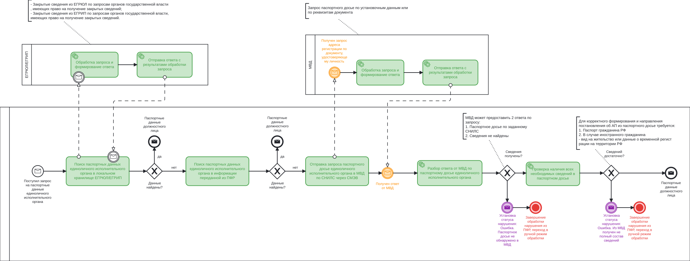
АСУ КНД автоматически запрашивает данные через СМЭВ: ЕГРЮЛ/ЕГРИП → при отсутствии → МВД. При неполучении — переход в ручной режим. Скачать .bpmn
Подпроцесс 2. Отправка и вручение постановления (ЕПГУ/ГЭПС + Почта России)
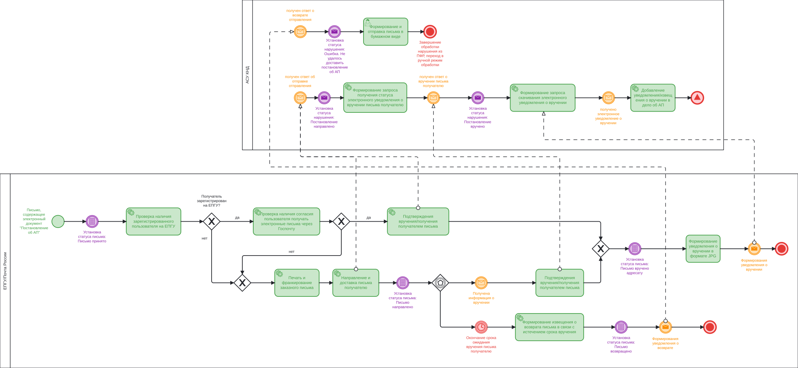
Проверка регистрации на ЕПГУ → электронная доставка через ГЭПС (3 раб. дня). При отсутствии на ЕПГУ → заказное письмо через Почту России (СМЭВ). При невозможности вручения — ручная обработка. Скачать .bpmn
Подпроцесс 3. Обжалование постановления
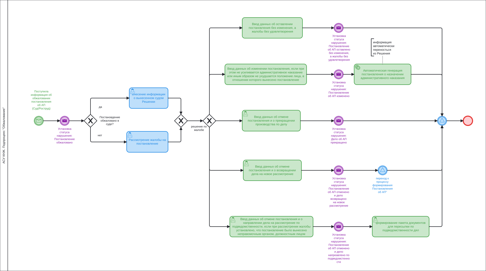
Фиксация обжалования, ввод информации об органе обжалования, отслеживание результата: изменение/снижение суммы, отмена штрафа, оставление без изменений. Скачать .bpmn
Подпроцесс 4. Взыскание штрафа через ФССП
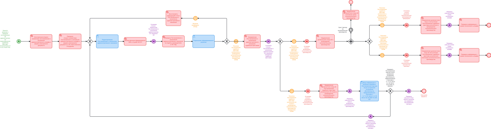
При неоплате штрафа — автоматическая передача в ФССП через СМЭВ (ч. 5 ст. 32.2 КоАП). Контроль 2-месячного срока исполнительного производства. Повторная отправка при отказе в возбуждении. Скачать .bpmn
Проблема 2. Ручное квитирование платежей в АИС УБР
При многократном росте объёма постановлений существующий процесс квитирования платежей не выдержит нагрузки.
Механизм проблемы: ручное квитирование возникает, когда плательщик гасит несколько штрафов одним платежом — поле УИН в платёжном поручении имеет фиксированную длину, несколько УИН туда не помещается. Особенно критично для массовых однородных нарушений по ст. 15.33.2, где один работодатель может иметь десятки постановлений.
Сейчас (2025)
Штрафов назначено
426 377 /год
В месяц
~35 500
Доля ручного квитирования
6%
Ручных операций/мес
~2 130
После автоматизации ст. 15.33.2
Существующие штрафы
~35 500 /мес
+ автоматические 15.33.2
+426 000 /мес
Доля ручного квитирования
6%
Ручных операций/мес
~27 700
Рост в 13 раз
Тенденция: доля ручного квитирования снижается
Но даже 6% при новом объёме — это неприемлемо
50%
2022
41%
2023
11%
2024
6%
2025
Варианты решения
Без изменения НПА/КоАП
Вар. 1
Увеличение штата
+14–28 ставок операторов по всем ГИТ
Не масштабируется, кадровый дефицит
Вар. 2
Алгоритмические деревья
Правила: ФИО/ИНН + сумма + дата. Снижение ручных на 60–80%
Не решает полностью, хрупкий
Вар. 3
ML / ИИ
Обучение на исторических данных. Снижение ручных на 80–95%
Нужна инфраструктура, менее прозрачный
Варианты 1–3 требуют дополнительной проработки стоимости в рамках развития АИС УБР
С изменением НПА/КоАП
Вар. 4 — рекомендуемый
Оплата штрафа только по УИН
Законодательная норма: штраф считается оплаченным только при указании УИН (уникального идентификатора начисления). Автоматическое постановление через ЕПГУ/ГЭПС уже содержит ссылку для оплаты с УИН — плательщик нажимает «Оплатить», платёж автоматически привязан к постановлению.
~0
ручных операций
100% авто
Изменения в КоАП уже планируются для автоматизации ст. 15.33.2 — норму об оплате по УИН можно включить в тот же пакет. Стоимость реализации: УИН уже используется в ГИС ГМП.
Эффект — ст. 15.33.2
+2,5 млрд ₽
в год в бюджет
−90%
трудозатрат инспекторов
210 млн
инвестиции · ROI 12x
План реализации
2026: Изменения в КоАП и ТК
2027: Доработка АСУ КНД + АИС УБР
2028-29: Пром. эксплуатация
3. Единый процесс расследования несчастных случаев
В АСУ КНД реализован полноценный процесс расследования НС со стороны инспектора (>30 шагов, контроль сроков, формирование документов). Однако процесс замкнут внутри ГИТ — нет электронного взаимодействия с внешними участниками.
Извещение — бумажное: работодатель уведомляет ГИТ по email, факсу/почте/нарочно. Нет электронного канала через ФГИС СОУТ/ГЭПС
Комиссия — физические подписи: приказ о составе комиссии загружается в АСУ КНД, но подписание членами комиссии — на бумаге → требуется физическое присутствие, затягивание сроков
Акт Н-1 / акт о расследовании (форма 5) — ручная загрузка: акт загружается в АСУ КНД, но передача в СФР не через СМЭВ → дублирование ввода, ошибки, потеря данных
Нет единого ЛК работодателя: работодатель не видит ход расследования, не может подписать документы электронно → разрозненность данных между участниками
электронная фиксация факта направления извещения о несчастном случае
Авто
передача акта Н-1 / формы 5 в СФР (СМЭВ 3.0)
Ключевое: Сквозной электронный процесс от извещения до передачи в СФР. Единая статистика и аналитика для выработки управленческих решений. Без физического присутствия — ЭП через ГосКлюч.
Трек 1: Обычное
Работодатель уведомил — комиссия — акт — СФР. Инспектор возглавляет комиссию (при тяжелом и смертельном НС)
Трек 2: Доп. расследование
Отказ подписать акт, нарушение процедуры → инспекция инициирует собственное расследование. Ветка из АСУ КНД
Трек 3: Сокрытый НС
Источники: сводка МЧС, данные больниц, СМИ. Электронное уведомление с суточным сроком снимает неопределённость
План реализации
2026: Законопроект + ТЗ
2027: Доработка ФГИС СОУТ + СМЭВ
2028: Пилот · Тираж
4. Искусственный интеллект в контрольно-надзорной деятельности
226 млн ₽ · 2027-2028
АСУ КНДГосТех
Как сейчас (результаты 2025 года)
В рамках ГК № 18-юр от 30.05.2025 разработаны и апробированы два прототипа ИИ-решений, подтвердившие техническую реализуемость применения ИИ в КНД.
Прототип 1: Интеллектуальный ассистент инспектора
Первый в практике ФОИВ интеллектуальный помощник: мгновенный доступ к НПА и данным АСУ КНД
94,2%
точность
208
документов
2,4 млн
дел АСУ КНД
≤60 с
отклик
Прототип 2: ML-подсистема индикаторов риска
Первая в Роструде аналитическая модель прогнозирования вероятности нарушений
0,76
ROC-AUC
35,2%
точность
166
признаков
43 млн
записей
Прототип 1: Интеллектуальный ассистент инспектора
Первый в практике ФОИВ интеллектуальный помощник для сотрудников контрольно-надзорного органа: мгновенный доступ к НПА и данным АСУ КНД с автоматическим цитированием источников.
94,2%
точность ответов
208
документов (29 НПА, 110 записок, 69 регламентов)
2,4 млн
дел АСУ КНД (370 тыс. КНД, 1,9 млн АД, 97 тыс. НС)
≤60 с
время отклика
Поиск по НПА с точным цитированием статей и пунктов
Табличные срезы данных из АСУ КНД (защищённые предустановленные запросы)
8 ролей с территориальной изоляцией по 85 субъектам РФ
Прозрачность: каждый ответ содержит ссылки на источники
Пилотный масштаб: прототип ограничен 100 одновременными пользователями — для тиражирования на 65 ГИТ (1000+ инспекторов) необходимы промышленные GPU-мощности
GPU-мощности запрошены у Минэкономразвития через платформу ГосТех — ответа не получено
Без GPU невозможно: масштабировать LLM-инференс, обеспечить отклик ≤60 с при одновременной работе сотен пользователей, запустить дообучение на новых данных
Прототип 1: Как надо (TO-BE)
Пилот в 3–5 ГИТ субъектов РФ (2026)
Автоматическая подготовка ответов на обращения граждан
Автоматическое формирование справок и проектов документов из АСУ КНД
Масштабирование до 500+ пользователей (2027), затем 1000+ (2028)
Вычислительные мощности: GPU-ресурсы запрошены у Минэкономразвития (ГосТех) — ответа не поступало. Альтернатива — создание собственного GPU/TPU-кластера на базе решений из Единого реестра российской радиоэлектронной продукции (Минпромторг) и Единого реестра российского ПО (Минцифры), например технологий Ivi Technologies.
Прототип 2: ML-подсистема индикаторов риска
Первая в Роструде аналитическая модель для прогнозирования вероятности нарушений трудового законодательства и формирования динамического риск-профиля работодателей.
0,76
ROC-AUC (на 52% лучше случайного)
35,2%
точность в группе высокого риска (3,5× выше)
166
аналитических признаков
43 млн
проанализированных записей
8 источников данных АСУ КНД: реестры организаций (ОКВЭД), материалы КНМ, административные взыскания, обращения граждан, задолженность по зарплате, травматизм и НС, показатели РОП, сведения СФР (ЭТК).
REST API для получения оценки риска по ИНН
Визуальная форма с детализацией по всем факторам
Интеграция в паспорт организации АСУ КНД
Интерпретируемость: ключевые факторы, повлиявшие на оценку
Обучающая выборка: 500 тыс. записей · 200+ тыс. уникальных организаций
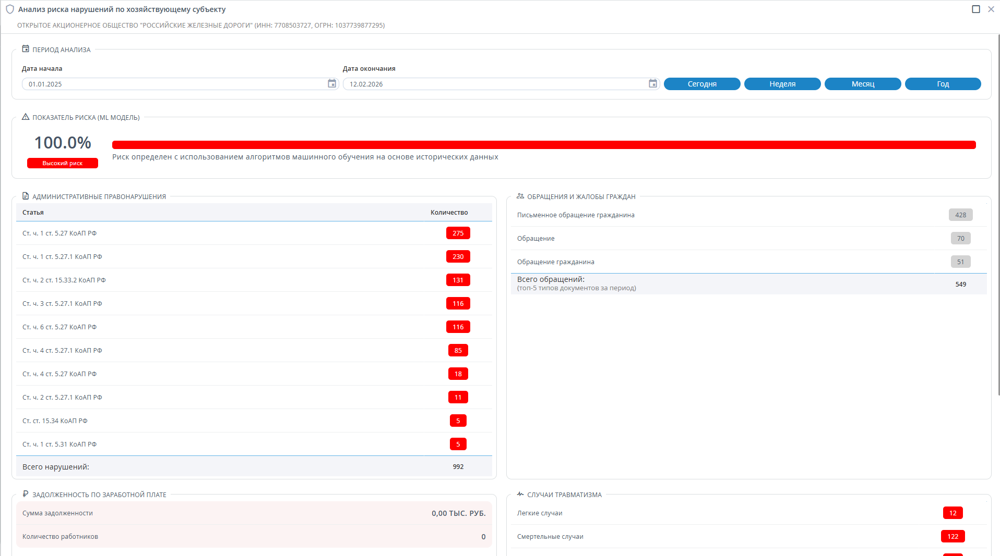
Прототип 2: Проблема
Нормативный барьер (248-ФЗ, ст. 61.1, п. 1.1): результаты ML-модели не могут служить основанием для планирования КНМ — индикаторы риска должны быть закреплены в НПА, прозрачны и проверяемы для работодателя
Только внутренние данные: модель обучена исключительно на данных АСУ КНД; внешние источники (ФНС, СФР, Минздрав) не подключены — снижает точность прогнозов
GPU-мощности запрошены у Минэкономразвития через платформу ГосТех — ответа не получено. Без GPU невозможно переобучение на расширенных данных и масштабирование модели
Прототип 2: Как надо (TO-BE)
Механизм доказательного формирования индикаторов риска: ML выявляет закономерности → эксперты формализуют → Минтруд закрепляет в НПА → АСУ КНД мониторирует. Обратная связь: результаты КНМ дообучают модель.
Вычислительные мощности: GPU-ресурсы запрошены у Минэкономразвития (ГосТех) — ответа не поступало. Альтернатива — создание собственного GPU/TPU-кластера на базе решений из Единого реестра российской радиоэлектронной продукции (Минпромторг) и Единого реестра российского ПО (Минцифры), например технологий Ivi Technologies.
Эффект
0,76 → 0,80
рост ROC-AUC модели к 2028
35% → 40%
точность отбора высокорисковых
500+
пользователей ассистента к 2027
−0,5 ч
на подготовку каждого КНМ
Целевые показатели к 2027
Промышленное внедрение ассистента для 500+ пользователей
Охват риск-мониторингом 5 млн работодателей
≥30% КНМ в пилотных ГИТ планируется с применением ИИ
3–5 новых индикаторов риска предложены для включения в НПА
Подключены внешние источники данных СФР и ФНС через СМЭВ
К 2028 году (при обеспечении финансирования)
Промышленная эксплуатация для 1000+ пользователей
Охват 10 млн работодателей
ROC-AUC ≥ 0,80
Выявляемость нарушений выше на 25%
Снижение нагрузки на добросовестных работодателей
Необходимые условия: вычислительные мощности ГосТех (ожидает подтверждения Минэкономразвития), финансирование промышленного внедрения с 2027, согласование межведомственного обмена с ФНС/СФР/Минздрав
Этапы реализации
2026: пилот в 3–5 ГИТ, GPU — ГосТех, механизм доказательных ИР
2027: промышленное внедрение ассистента, подключение ФНС+СФР (59 млн ₽)
2028: масштаб на все ГИТ, ROC-AUC ≥ 0,80, 10 млн работодателей (167 млн ₽)
5. ЭКДО: разработка методологии проактивного контроля на ЭКД РвР
ЕЦП «Работа в России»
ЭКДО (РвР · Роструд)
Оператор платформы: Роструд (ЕЦП РвР)
Электронный кадровый документооборот — полностью удалённое взаимодействие работников с работодателем от найма до завершения трудовой деятельности. Реализован на платформе «Работа в России».
Система проактивного дистанционного контроля основана на:
📋 Пример эталонного процесса: «Приём на работу» (BPMN-схема)
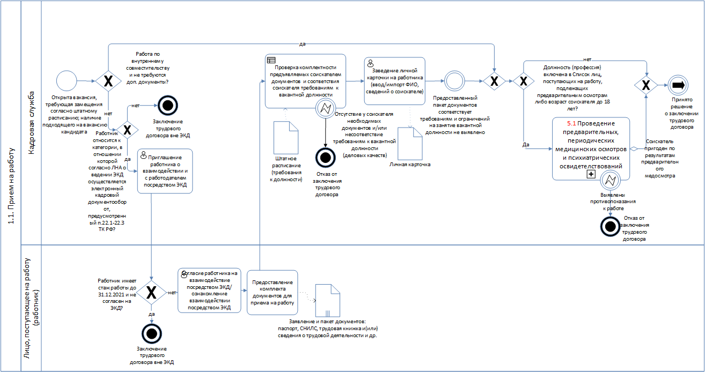
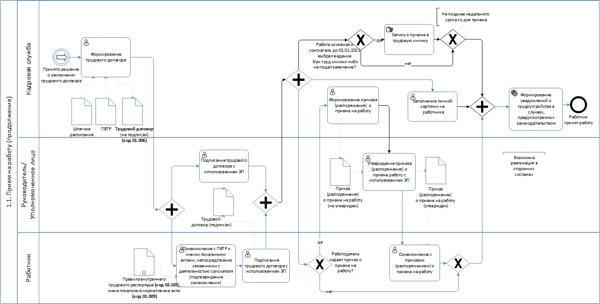
Процесс 1.1 «Приём на работу» — роли: кадровая служба, руководитель, работник. Все шаги оцифрованы с точками контроля ТК РФ. Один из 140 эталонных процессов.
Ключевой факт: ЭКДО работает на РвР, но НЕ интегрирован с АСУ КНД. Данные ЭКДО не используются для контроля. Интеграция — цель проекта ниже.
5. ЭКДО: интеграция с АСУ КНД и проактивный контроль
Бюджет требует оценки
ЭКДО (РвР · Роструд)АСУ КНД (Роструд)
Механизм проактивного контроля
1. Работодатель заполняет документ
→
2. Контроль при сохранении
→
3. Предупреждение + «Цифровой помощник»
→
4. Исправление нарушения
При выявлении риска нарушения работодатель получает предупреждение с подсказкой и возможностью исправить. Цель — не допустить нарушение, а не наказать за него.
10 групп кадровых процессов
Приём на работу
Рабочее время и время отдыха
Изменение условий трудового договора
Охрана труда
Оплата труда
Образование работника
Материальная ответственность
Социальное партнерство
Прекращение трудовых отношений
Иные кадровые мероприятия
Каждая группа: эталонная схема + требования к атрибутам + алгоритмы выявления нарушений + «Цифровой помощник»
Примеры проактивного контроля
Приём несовершеннолетнего (17 лет): система проверяет наличие сведений о медосмотре (ст. 266 ТК РФ) и рабочее время ≤35 ч/нед (ст. 92 ТК РФ)
Что даёт
Предотвращение нарушений ещё на стадии оформления
Снижение нагрузки на КНМ — меньше выездных проверок
Смещение акцента на нарушения, угрожающие жизни и здоровью
Бюджет интеграции требует отдельной оценки. Расчёт состава работ и стоимости — задача 2026 года
Сроки
2026: внедрение методологии проактивного контроля на ЭКД РвР
2027: интеграция ЭКД РвР и АСУ КНД
Стратегическое видение: от ЭКДО к автоматической оценке достоверности сведений по обращениям граждан
Стратегия
ЭКДО — первый бизнес-кейс. Далее — автоматическая оценка достоверности сведений по обращениям граждан на основе данных кадровых систем работодателей
Направление 1 — уже проектируется
Проактивный контроль кадровых процессов
ЭКДО на платформе РвР → при оформлении документов автоматическая проверка ТК РФ → предупреждение работодателю с подсказкой как исправить. Цель — снижение нарушений, а не контроль. Система не даёт работодателю ошибиться ещё на стадии оформления.
Подробнее — в карточке выше
Направление 2 — оценка достоверности
Автоматическая верификация обращений по 248-ФЗ
При начале КМ по обращению гражданина есть этап оценки достоверности сведений. Сейчас — ручной запрос. Предлагается: АСУ КНД автоматически направляет запрос работодателю через платформу → данные подтверждают или опровергают нарушение.
Примеры автоматической верификации:
«Не платят зарплату» → Запрос в систему работодателя: ведомости начислений и выплат за период → автоматическая сверка с датами и суммами
«Не оформляют ТД» → Запрос: в СФР и в ЭКДО/кадровую систему информации о приёме на работу и трудовом договоре с данным СНИЛС → подтверждение/опровержение
«Принуждают к сверхурочной» → Запрос: данные СКУД/табелей + приказы о сверхурочных + наличие согласий → автоматическая проверка ст. 99 ТК
«Не проводят инструктаж ОТ» → Запрос: журналы инструктажей / данные ЭКДО → есть ли записи о прохождении работником инструктажа
«Не предоставляют отпуск» → Запрос: график отпусков, приказы, расчёт стажа → подтверждение права на отпуск и факт непредоставления
«Нет спецоценки условий труда» → Запрос: данные ФГИС СОУТ + карты рабочих мест → автоматическая проверка наличия и срока действия
Обращение
→
АСУ КНД: запрос
→
Платформа → система работодателя
→
Авто-ответ: подтверждение / опровержение
Эффект: сокращение сроков рассмотрения обращений, снижение нагрузки на инспекторов, объективная оценка на основе данных, а не только заявлений
Поэтапное развитие
2026-2027
ЭКДО → АСУ КНД проактивный контроль
2027-2028
Разработка требований к кадровым системам + верификация пилот ДЦМОТ (30-40 предприятий), авто-запросы по 248-ФЗ
2028+
Масштабирование новые типы данных, проактивные индикаторы, снижение категорий риска
248-ФЗ: Автоматическая верификация обращений
При поступлении обращения АСУ КНД автоматически запрашивает данные у работодателя через «Работу в России»
6. Развитие Онлайн-инспекции: устойчивость и современность фронт-офиса
Бюджет требует проработки
ОИ.рфМП ОИ
Как сейчас (AS-IS)
Онлайн-инспекция — крупнейший клиентский портал Роструда, обеспечивающий доступ к сервисам для >30 млн граждан и работодателей в год
12 сервисов для граждан и бизнеса
Для граждан (5)
Сообщить о проблеме — >614 000 обращений
Дежурный инспектор — >195 000 консультаций
Электронный инспектор — >1 331 000 самопроверок
Чат-бот «Онлайн инспектор» — >215 000 запросов
Урегулирование разногласий
Для работодателей (7)
Предприятие информирует
Профилактический визит
Электронная проверка
Запрос категории риска
Онлайн оплата штрафов
Банк предприятий — >48 000 запросов
Электронная приёмная — >23 000 записей
Информационные сервисы
Банк документов (шаблоны, в т.ч. по охране труда)
Библиотека трудовых ситуаций
Трудовой навигатор — >150 пошаговых инструкций
Памятки — >200 памяток по трудовым правам
26+ млрд ₽экономия работодателей
Сумма штрафов, которых избежали работодатели при устранении нарушений, выявленных «Электронным инспектором»
Аудитория
>30 млн посетителей
>1,2 млн зарегистрированных
Текущие технологии
Авторизация через ЕСИА (текущая версия)
МП: вход только через Госуслуги
Backend: зарубежное ПО
Проблема — 3 критических риска
⚠️ Риск 1: Отключение от ЕСИА
Срок: конец 2026 года Последствия: блокировка >1,2 млн зарегистрированных пользователей
Требуется переход на типовое решение ЕСИА
📱 Риск 2: МП — только через ГУ
Последствия: барьер для молодёжи, снижение охвата, недовольство пользователей
Требуется альтернативная авторизация (логин/пароль)
🔒 Риск 3: Зарубежное ПО
Последствия: риски безопасности, санкции, блокировка финансирования других направлений
Требуется импортозамещение backend и МП
Критично: Без решения этих проблем ОИ.рф может прекратить работу в 2026 году, лишив доступа к сервисам >30 млн граждан и работодателей
Как надо (TO-BE) — 3 направления развития
21 направление развития для устранения рисков и модернизации ОИ до 2030 года
🌐 Направление 1: Портал ОИ.рф (12 направлений)
1. Переход на типовое ЕСИА
Срок: 2026 (критично) Цель: устранение Риска 1 (отключение в конце 2026) Эффект: устойчивость >1,2 млн пользователей
2. Импортозамещение backend
Срок: критично (без этого не дадут другое финансирование) Цель: устранение Риска 3 (зарубежное ПО) Эффект: безопасность, независимость, разблокировка финансирования
3. Интерактивные калькуляторы
Пользователь указывает параметры (сумма зп, месяц отпуска), калькулятор рассчитывает показатель (зп за отпускной месяц)
4. Маршрутизатор для малого бизнеса
Работодатель задаёт процесс (приём на работу), система проводит профилирование и предлагает шаги, документы, шаблоны с заполнением и отправкой
5. Развитие ЛК работодателей
Прикрепление сотрудников к ЮЛ/ИП, управление сотрудниками через ЛК
6. Развитие ЛК работников
Хранилище документов (трудовой договор, коллективный договор, NDA, ДС к ТД и др.)
7. ЭДО работник-работодатель
Обмен документами (заявление на отпуск, уведомления), возможно подписание через Госключ
8. Интеграция с мессенджерами ВК и МАХ
Персональные уведомления о событиях на ОИ (как службы доставки, банки)
9. Раздел по СВО
Информация для участников и родственников СВО: компенсации (описание, калькуляторы, заявления), сервисы для ветеранов (юридическая, психологическая помощь, вакансии)
10. Оповещение работодателей о нарушениях
Рассылка в ЛК работодателей о частых нарушениях/рисках с информацией по НПА и образцами документов
11. Подключение профсоюзов
Регистрация профсоюза, ЛК, АРМ профсоюза, обращения работников в профсоюз, уведомления от ГИТ о проверках
12. Онлайн оплата штрафов для физлиц
Получение СНИЛС и паспортных данных из ЕСИА, доработка интеграции с АСУ КНД
🤖 Направление 2: ИИ на ОИ (5 направлений)
Развитие ОИ: Направление 2 — ИИ на Онлайн-инспекции (5 направлений)
1. Помощник ОИ (аналог Робота Макс)
Начало взаимодействия с портала через общение с помощником, ведение к нужному сервису. Требует внедрения нового ИИ движка на базе GPT
2. Умный поиск на базе GPT
Интеграция YandexGPT/GigaChat, поиск на естественном языке, суммирование контента, анализ текстов, упрощение юридических терминов
3. ИИ-помощь юристам в подготовке ответов
Подсказки на основе предыдущих ответов специалистов, маркировка возможных ответов из базы знаний. Специалист видит подсказки от системы и готовит профессиональный ответ быстрее
4. Анализ внутренних данных с ИИ
Выявление острых инцидентов, определение тональности сообщений, статистика востребованных сервисов (какие файлы скачивают, какие запросы в СИЗах)
5. Сервис "Оцени свое рабочее место"
Оценка профриска рабочего места через фото (ИИ определяет несоответствия) + интерактивная анкета. Замер уровня шума и других параметров телефоном. Удобно в мобильном приложении
📱 Направление 3: Мобильное приложение (4 направления)
Развитие ОИ: Направление 3 — Мобильное приложение (4 направления)
1. Авторизация по логину/паролю
Цель: устранение Риска 2 (недовольство пользователей из-за входа только через ГУ) Эффект: удовлетворённость пользователей, расширение аудитории
2. Вывод сервисов из сайта в МП
Регистрация и ЛК работодателей, запись на приём, досудебное обжалование, предприятие информирует, штрафы, электронная проверка. Раздел с кнопками остальных сервисов (переход на мобильную версию сайта)
3. Полезные советы и возможности
Производственный календарь, всплывающие ситуативные советы (когда жарко/холодно — напоминалка про режим работы, в начале лета — про отпуска)
4. Привлечение молодой аудитории
Короткие видео (рилс) с кейсами и вопросами на основе материалов ОИ (генерация AI), размещение на сайте/МП с возможностью шеринга
Привлечение новых пользователей через МП, мессенджеры, ИИ
Улучшение
пользовательского опыта
Современный UX, ИИ-сервисы, калькуляторы
Для граждан
Удобная авторизация в МП (логин/пароль)
Быстрые ответы через ИИ-помощника и умный поиск
Персональные уведомления в мессенджерах ВК и МАХ
Интерактивные калькуляторы (зп за отпуск и тд)
Оценка профриска своего рабочего места (МП + ИИ)
Хранилище трудовых документов в ЛК
Раздел по СВО для участников и родственников
Для работодателей
Пошаговое ведение по процессам (маршрутизатор МСП)
ЛК: управление сотрудниками, прикрепление к ЮЛ/ИП
ЭДО с работниками (заявления, уведомления, подписание через Госключ)
Оповещения о частых нарушениях с НПА и образцами
Онлайн оплата штрафов для физлиц (расширение сервиса)
Стратегический эффект
ОИ.рф — технологически современный, устойчивый и клиентоориентированный фронт-офис Роструда до 2030 года, обеспечивающий доступ к сервисам для >30 млн граждан и работодателей
5 проектов развития системы управления финансово-хозяйственной деятельностью Роструда и 65 ГИТ. Общий объём: 424 млн ₽ разработка + 122 млн ₽ сопровождение.
7.1. Тиражирование пилотного проекта Минфина (администрирование доходов)16,1 млн ₽ВПЦТ 2026
Проблема: протоколы ГИТ возвращаются мировыми судьями из-за отсутствия УИН — присвоение УИН вручную через администратора ГИС ГМП.
Решение: интеграция с региональными сегментами ГИС ГМП — автоматическое формирование УИН. Эффект: неотвратимость наказания, повышение платёжной дисциплины.
7.2. Управление дебиторской задолженностью60 млн ₽Доп. финансирование 2027
Проблема: администратор доходов вручную контролирует сроки просроченной задолженности, нет системных мер предупреждения.
Решение: автоматический контроль перехода задолженности в статус просроченной, автоматизация регламента работы с должниками, сверка с данными ФК и Минфина.
Эффект: системное снижение просроченной ДЗ, контроль в разрезе первичных документов.
7.3. Внутренний финансовый контроль и мониторинг52 млн ₽ВПЦТ 2027
Проблема: контрольные мероприятия в ГИТ выполняются вручную — планирование, проведение, документирование, анализ показателей из разных источников.
Решение: интеграция финансовых показателей из ФК, Минфина, ФНС через НСУД (СМЭВ 4.0), автоматизация планирования контрольных мероприятий с учётом рисков.
Эффект: сокращение сроков проверок, снижение ручных операций, повышение прозрачности.
7.4. Предпроектное обследование: ИИ при прогнозировании доходов и расходов18 млн ₽Доп. финансирование 2027
Анализ возможностей ИИ для прогнозирования поступлений доходов, выявления аномалий в квитировании платежей, оптимизации расходной части бюджета ГИТ и ЦА Роструда.
7.5. Интерактивные паспорта объектов имущества264 млн ₽Доп. финансирование 2028-2029
Проблема: нет «полной картины» по имуществу ГИТ — затраты, состояние, соответствие законодательству (пандус, ОСАГО и пр.).
Решение: интерактивные паспорта с фото, документацией, схемами; интеграция с НСПД и госресурсами через СМЭВ 4.0.
Эффект: оперативная информация, качественное планирование расходов, контроль кадастровой стоимости.
Финансирование проектов цифровой трансформации 2026-2029
Проект
Сумма
Годы
Статус
Развитие АСУ КНД
90 млн ₽
2026
Заложен
ИИ: риск-профиль работодателя
59 млн ₽
2027
Заложен
ИИ: помощник инспектора
167 млн ₽
2028
Заложен
Автоматическое привлечение к ответственности по ст. 15.33.2
210 млн ₽
2027-2029
Заложен
Импортозамещение
300 млн ₽
2027-2030
Требует утверждения
Итого проекты ЦТ
826 млн ₽
2026-2030
Развитие АИС УБР
Проект
Сумма
Годы
Статус
Тиражирование пилота Минфина
16,1 млн ₽
2026
ВПЦТ 2026
Управление дебиторской задолженностью
60 млн ₽
2027
Требует доп. финансирования
Внутренний финансовый контроль + отчётность + РКР
65,5 млн ₽
2027
ВПЦТ 2027
Предпроектное обследование ИИ
18 млн ₽
2027
Требует доп. финансирования
Интерактивные паспорта имущества (2 этапа)
264 млн ₽
2028-2029
Требует доп. финансирования
Итого разработка АИС УБР
424 млн ₽
2026-2029
Техническое сопровождение: 122,5 млн ₽ (30,7 млн в 2026 + 33,9 млн в 2027 + 57,8 млн в 2028). Общий объём АИС УБР: 546 млн ₽.
826 + 546 = 1 372 млн ₽
Общий объём финансирования проектов ЦТ (АСУ КНД/ОИ + АИС УБР + импортозамещение)
826 млн — АСУ КНД/ОИ/ИИ/15.33.2 · 424 млн — разработка АИС УБР · 122 млн — техподдержка АИС УБР · 210 млн → возврат +2,5 млрд ₽/год (ROI ~12x)
Финансовая перспектива 2027-2030
Проект
2027
2028
2029
2030
ИИ: риск-профиль работодателя
59 млн
—
—
—
ИИ: помощник инспектора
—
167 млн
—
—
Автоматизация ст. 15.33.2 (разработка)
184 млн
—
—
—
Автоматизация ст. 15.33.2 (техподдержка)
—
26 млн
—
—
АИС УБР: разработка
143,5 млн
123 млн
141 млн
—
АИС УБР: техподдержка
33,9 млн
57,8 млн
—
—
Импортозамещение
TODO
TODO
TODO
TODO
Итого по году
420+ млн
374+ млн
141+ млн
TODO
Суммы импортозамещения по годам требуют утверждения (300 млн ₽ на 2027-2030). АИС УБР 2026: пилот Минфина 16,1 млн + техподдержка 30,7 млн (не в таблице — уже в ВПЦТ 2026).
Дорожная карта 2026-2029
2026
Развитие АСУ КНД (90 млн ₽)
Изменения в КоАП, ТК, ФЗ-248
Законопроект КТС
Пилоты ИИ в ГИТ
Методология проактивного контроля ЭКД
Тиражирование пилота АИС УБР (Минфин)
ОИ.рф: редизайн по UX-аудиту (2-я и 3-я очереди)
ОИ.рф: чат-бот в мессенджере Max
2027
ИИ 1-я очередь (59 млн ₽)
Доработка АСУ КНД (15.33.2 + легализация)
Ввод КТС + реестр удостоверений
ЭКДО → АСУ КНД (интеграция)
МП «Инспектор»
АИС УБР: ДЗ + ВФК + ИИ-обследование (143,5 млн ₽)
2028
ИИ масштабирование (167 млн ₽)
Единое рабочее место инспектора
КТС: пром. эксплуатация
Автоматизация 15.33.2: запуск
АИС УБР: паспорта имущества — 1-я очередь (123 млн ₽)
2029
АИС УБР: паспорта имущества — 2-я очередь (141 млн ₽)
Импортозамещение (продолжение)
Ожидаемые эффекты: что получим
Результаты разделены по категориям — бюджет, работодатели, общество
Эффект для бюджета
Прямые поступления
+2,5 млрд ₽/год
Автоматическое привлечение по ст. 15.33.2
>1 млрд ₽/год
Штрафы (текущий уровень)
Налоговый эффект от легализации 716 тыс. работников оценивается совместно с ФНС
Эффект для работодателей
Снижение издержек
>26 млрд ₽
Экономия штрафов через «Электронный инспектор» (накопленный)
59 200 ч-ч/год
Экономия на СОУТ (электронные декларации)
Социальный эффект
Защита прав
716 тыс.
Граждан легализовано из тени (2025)
>17 млрд ₽
Задержанной зарплаты выплачено работникам
>43 тыс.
Прав работников восстановлено
>2 млрд ₽
Предотвращение мошенничества КТС
Риски: что будет, если не делать
Последствия при отсутствии финансирования или задержке законодательных изменений
!
Задержка законодательных изменений
Без изменений в КоАП: потеря +2,5 млрд ₽/год для бюджета (ст. 15.33.2)
Без законопроекта КТС: продолжение мошеннических схем на>2 млрд ₽
Без поправок в ТК и ФЗ-248: ограниченные возможности борьбы с нелегальной занятостью
Инспекторы тратят часы на поиск по НПА вместо секунд
Отставание от других контрольных органов, использующих ИИ
Потеря GPU-мощностей на ГосТех (выделяются ограниченно)
Решение, которое требуется
Конкретные пункты для рассмотрения на совещании
1
Согласовать бюджет проектов ЦТ: 526 млн ₽ (2026-2029)
Развитие АСУ КНД (90 млн) + ИИ (226 млн) + автоматизация ст. 15.33.2 (210 млн)
2
Поддержать законодательные инициативы
Изменения в КоАП РФ (ст. 15.33.2 — автоматизация), ТК РФ (признаки трудовых отношений), ФЗ-248 (основания КНМ), законопроект о КТС, законопроект об электронных инструктажах
3
Обеспечить GPU-мощности для ИИ через ГосТех
Для пилота 2026 и промышленного внедрения 2027-2028. Модели требуют GPU-инференса (Qwen3-8B)
4
Провести совместную с ФНС оценку налогового эффекта легализации
716 тыс. легализованных работников — необходимо оценить поступления НДФЛ и страховых взносов
Итоги 2025 года: что сделано
Ключевые результаты контрольно-надзорной деятельности
>213 тыс.
нарушений выявлено
>17 млрд ₽
задержанной зарплаты выплачено работникам
>43 тыс.
прав работников восстановлено
>1 млрд ₽
штрафов взыскано в бюджет
Борьба с нелегальной занятостью
750,9 тыс.
выявлено граждан
716 тыс.
легализовано (95%)
С 01.01.2025 ведётся реестр работодателей с фактами нелегальной занятости
Оценка налогового эффекта от легализации 716 тыс. работников проводится совместно с ФНС
KPI 2024 — все достигнуты
Погибших при НС: 1,40 на 100 тыс. занятых (норматив ≤1,59)
Тяжело пострадавших: 5,59 на 100 тыс. занятых (≤5,6)
Просроченная задолженность: 0,004% ФОТ (≤0,046%)
Производственный травматизм: снижение на 10%
Рейтинг КНД Минэкономразвития: 2023 — 3 место → 2024 — 2 место среди крупнейших контрольных органов (>5 тыс. проверок)
✓
Декларации СОУТ: проект завершён (ГК 33-ЮР)
Сервис запущен в декабре 2025. В 2026 — первый полный год приёма деклараций СОУТ через ЕПГУ
АСУ КНДЕПГУСМЭВ 3.0
105 000+
деклараций СОУТ ожидается в 2026
от 63 ГИТ + Крым и Севастополь · автоматизация обработки 100%
59 200
человеко-часов/год экономия
в 3 раза
снижение нагрузки на ГИТ по СОУТ
✓
ИИ: 2 прототипа разработаны и апробированы (ГК 18-ЮР)
Техническая реализуемость подтверждена. Готовы к пилотированию в 2026
ML: Риск-профиль работодателя
0.76
ROC-AUC
166
признаков
43 млн+
записей
Качество модели на 52% выше базовой линии. Обучена на данных 500K+ организаций из 8 источников
RAG: Интеллектуальный помощник инспектора
94.2%
точность
≤60 сек
отклик
208
источников
Апробирован на 100+ пользователях. Технологии: Qwen3-8B, Qdrant, e5-large